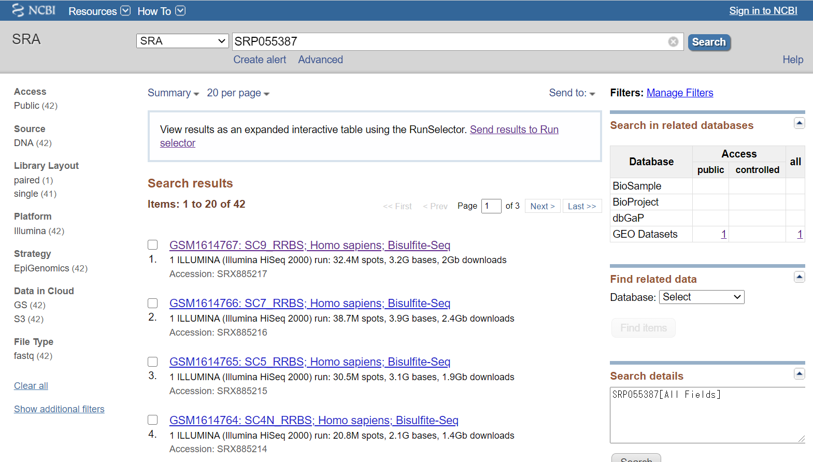
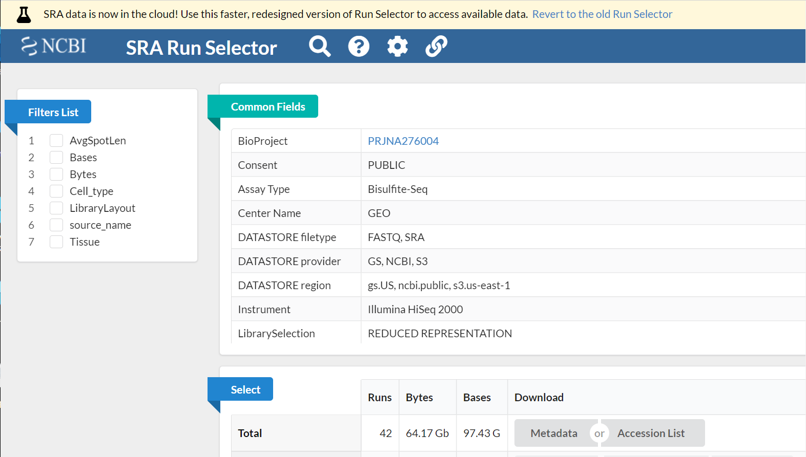
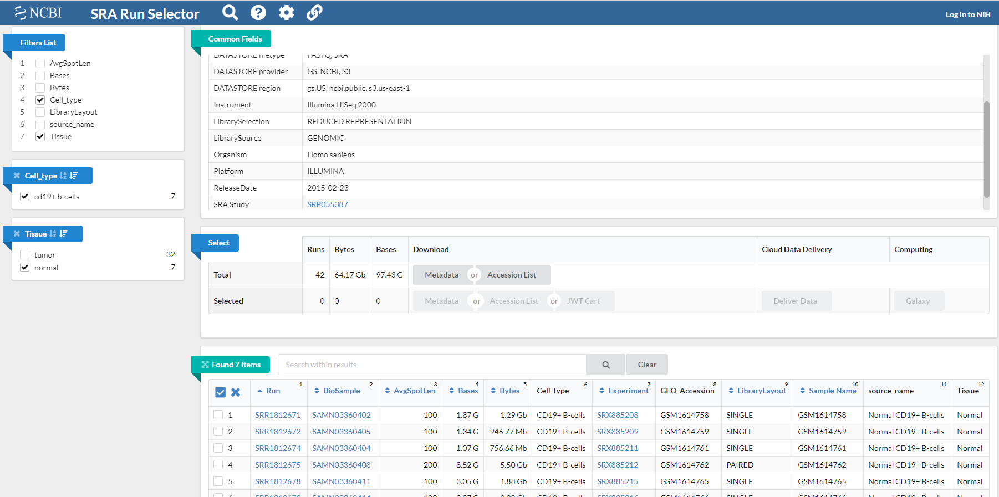

update : 2021/05/03 (SRA Toolkitへのリンク)
https://www.ncbi.nlm.nih.gov/sra
NGSデータを入手できる。生物や実験の種類で検索して、実験の詳細やNGSデータを落とせる。SRA Toolkit と組み合わせると欲しいデータを一括でダウンロードできる。
論文などに書かれたAccession番号からデータを入手できる。
＜Accession番号の例＞
DRR045547, ERX040843, SRP055387, DRA003980
番号の意味はこちら
上部の SRA 検索窓にAccession番号を入れて検索する。今回は"SRP055387" で検索してみる。

上部に "View results as an expanded interactive table using the Run Selector. Send resuolts to Runs selector" とかかれた注意があるので、Run Selector へ移る。

このサイトでは、自分の欲しい実験のNGSデータを選択して入手できるようにしている。左側の Filters list を用いると、欲しい実験結果のみを選択できるようになる。今回は例えば、Cell_type > cd19+ b-cells, Tissue > normal のように選択すると、以下のように7つのRunのみが選択される。

実際に欲しいデータにチェックを入れて、Select の Selected から (Download) Accession List を押して Accession番号のリスト SRR_Acc_List.txt をダウンロードする。
以下は次のように操作
SRA Toolkitをインストールしておく。
落としてきたいディレクトリへ移動(cd)したのち、SRA Toolkit の fasterq-dump コマンドを(繰り返し)用いてデータをダウンロードする（参考：ばいばいバイオ氏のサイト, DRY解析教本）。
cat SRR_Acc_List.txt | while read line; do cmd="fasterq-dump --gzip --split-files ${line}"; eval ${cmd}; done
while read line で SRR_Acc_List.txt 内を一行ずつ読み進め、fasterq-dump コマンドでダウンロードしている。オプションの --gzip は fastq.gz となるように圧縮することを、 --split-files は paired-end の場合に Forward と Reverse のデータを分けてダウンロードする（ single-end ならば不要）。
こうしてfastq.gzファイルを一括でダウンロードできた。